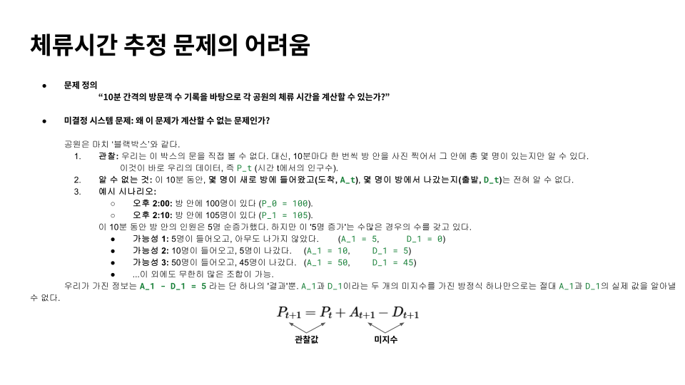

풀 수 없다고 증명하고 접었던 문제 하나 — 체류시간
몇 해 전, 스스로 풀 수 없다고 결론 내린 문제 하나를 그만두었다. 도시의 어떤 자리에 사람들이 얼마나 오래 머무는가, 그 체류시간을 집계 데이터로부터 알아낼 수 있을까 하는 문제였다. 도시 인공지능 연구소에 있을 때였고, 이 주제는 그 전 정보전자연구소 시절 자문으로 드나들던 연구실에 소개했던 개인적인 관심사였다.
왜 체류시간이었나. 도시의 한 격자에 시간대별로 몇 명이 있는지(생활인구)는 알 수 있다. 사람들이 어디에서 어디로 움직이는지(생활이동)도 집계된 형태로 주어진다. 그런데 이 머릿수만으로는 그 자리가 무엇인지 말할 수 없다. 같은 “백 명”이라도, 스쳐 지나가는 길목의 백 명과, 일하러 온 백 명과, 그곳에 사는 백 명은 전혀 다른 장소를 뜻한다. 이 셋을 가르는 것이 체류시간이다. 잠깐 머물면 통과, 한나절 머물면 목적지, 밤새 머물면 거주. 누가 그 자리를 실제로 쓰는 사람이고 누가 스쳐가는 사람인지를 나누는 일이기도 했다.
그래서 집계된 생활인구와 생활이동으로부터 체류시간을 복원해 보려 했다. 되돌아보면 지금 떠올릴 수 있는 방법은 거의 다 손을 댔다. 최적화로 풀어 보려 했고, 여러 형태의 분해(gradient·Hessian 기반, 텐서 분해)를 시도했고, 은닉 마르코프 모형 같은 확률론적 접근으로 우회해 보려 했다. 체류의 실마리가 될 만한 다른 정보, 이를테면 통과 교통량을 밖에서 끌어와 제약을 보태 보기도 했다. 시도는 매번 조금씩 다른 자리에서 멈췄지만, 결국 같은 벽 앞이었다.
여러 차례 시도가 막힌 끝에 그 문제를 형식적으로 적어 보았다. 풀이가 어려운 게 아니라, 풀 수 있는 형태의 문제가 아니었다. 관측되는 집계량이 주는 제약과 복원해야 할 미지수 사이의 관계가 애초에 유일한 해를 허락하지 않았다. 서로 다른 하루를 보낸 여러 사람이 정확히 같은 집계를 만들어낼 수 있었고, 집계를 거꾸로 돌려 개인의 머무름을 되찾는 일은 원리적으로 닫혀 있었다. 문제가 어렵다는 것이 아니라, 답이 없다는 것이 드러난 셈이었다.

이 결론이 혼자만의 것은 아니었다. 함께 논의한 교수님들은 애초에 “체류시간을 추정한다”는 문제 설정 자체가 막다른 길이라고 짚었다. 알고 싶은 것은 그 자리가 어떤 장소인가이지 체류시간이라는 숫자 자체가 아니지 않느냐는 것이었다. 증명해 보려고 시뮬레이션으로 기준값을 만들어 봐도, 그 기준값 자체가 또 하나의 추정일 뿐이었다. 그런 지적과 자각이 겹치면서, 나는 주제를 접었다.
그리고 몇 해가 지났다. 최근 서울시는 250미터 격자 단위로 체류인구 데이터를 공개하기 시작했다. 각 자리에 사람들이 언제부터 얼마나 머물렀는지가 집계된 형태로 담겨 있다. 몇 해 전 되돌리려 했던 바로 그 값이다.
다만 이것은 그 문제가 풀린 것과는 다르다. 옛 데이터로부터 체류시간을 복원한 것이 아니라, 그것을 처음부터 직접 측정해 담은 데이터다. 그때의 결론은 그 데이터 안에서는 지금도 그대로 유효하다. 달라진 것은 푸는 방법이 아니라 재는 도구다.
지금은 이 체류인구 데이터를 써서, 도시의 기능이 낮과 밤에 어떻게 바뀌는지를 체류시간을 축으로 읽는 작업을 하고 있다. 몇 해 전이라면 시작할 수 없던 연구다. 자세한 내용은 다른 자리로 미룬다.
돌아보면 그때의 “풀 수 없다”는 결론은 틀리지 않았다. 다만 그것은 문제 자체에 대한 판정이라기보다, 그때 손에 쥔 데이터로 무엇을 할 수 있는지에 대한 판정이었다. 접어 둔 문제를 이따금 다시 꺼내 보게 되는 것은 그래서다.
다른 노트
| 날짜 | 제목 |
|---|---|
| 2026-06-29 | Public(공중)에 대한 논의 — Dewey의 글과 학생 시절 작업 하나 |